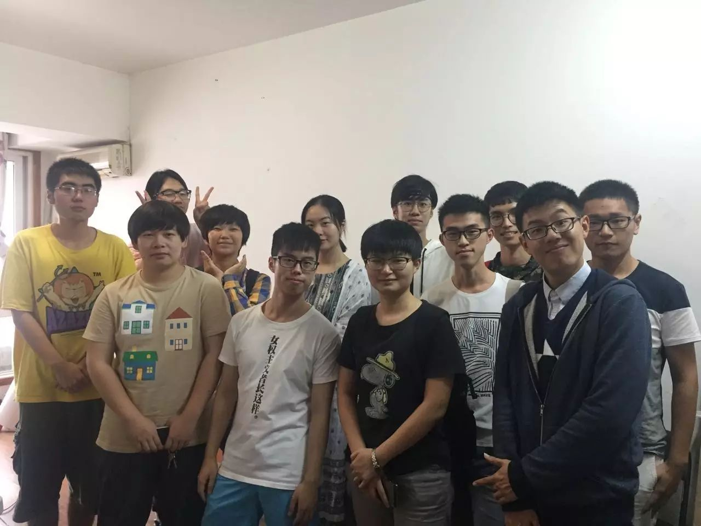
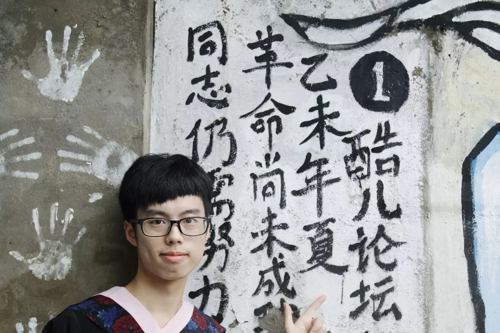
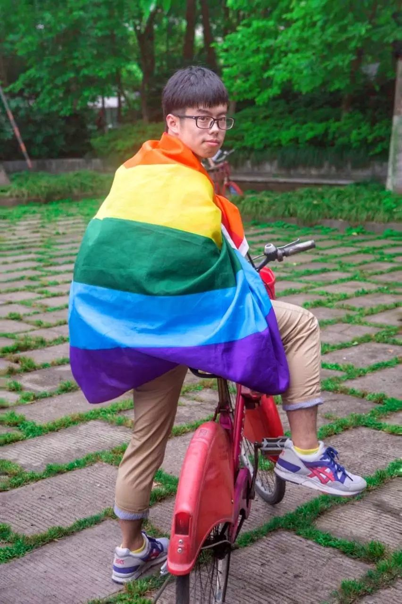

辞任酷儿论坛负责人书
时间是可以膨胀的，当速度快到接近光。在“我做了多久的负责人”这个问题下，时间也会在不同人回答中以年为尺度膨胀，系数从25%到50%，都大的惊人。
是，太快了。
改变的速度快到，仅仅发生在两年前的事，我却需要翻到当年的老贴才能回忆起那时的感受。我甚至会怀疑，当时书写的的情绪是真实的吗？为什么我当时会这么想？这么幼稚的文字跟想法是怎么打出来的？——这通常发生在看我初中QQ空间的时候。
2014年8月，还在洛杉矶交流的我在QQ上接受了暖阳邀请成为论坛志愿者。彼时我已经在论坛上水了一年，是论坛活动的常客，有一堆在论坛认识的朋友，收获的是满满的“小群体”归属感——这个词后来被称为网罗。正如在2015年新年致辞中所写，我之前一直把自己打造成一个“旁观者”，目睹着这个论坛不断式微，直到整个组织都快被抛弃，直到我都不得不伸出手。在10月接任论坛站长的时候，只剩下包括我在内的3个志愿者和1000多块钱。我就是靠着“网罗”组建了第一个团队，通通都是认识的男同性恋们，他们当中只有一个人陪我走到现在。
酷儿论坛有将近15年的历史，前面12年各有各的特点，但终究逃不出一个“浙大男同性恋交友网站”的圈。这不是一个贬义词，但是我想做的和酷儿论坛需要做的的远不止这一点。如果在两年前，有人跟我说我们可以在浙大食堂前广场上举起彩虹旗和标语喊口号，会有基佬拉拉异性恋来参加，我会觉得你是神经病，但是这的确是我们2个月前的活动；如果有人跟我说我们能同时在杭州三所学校请人做正式讲座，我也会觉得你疯了，但这就是我们这个月刚做的事。明确的目标愿景，全面而清晰的部门组成，多元的志愿者团队，具有性别视角的活动与推文，靠谱和行动力强的核心成员，这些我当初期待但是不抱有期望的东西，都在两年后不断刷新我的想象力，也提醒着“我老了”的事实。功过自有证，无需再多言。

写完上面两段，我会想象到某种读者反应，跟我曾经有过的反思或是怀疑相似：为什么我会把一个组织看得这么大，用上述一种书写“大历史”的方法来记录一个明明只有少数人知道的小众团体。我现在可以有信心的讲出：我在乎每个人的改变，珍惜与接触到的人的情谊、连接，不以数量、程度为价值标准。假设有一个人觉得这个组织对ta很重要，我就会把它看很大；有一个人因为这个组织有了更多可能性，我就觉得它值得被书写。因此，在回顾了酷儿论坛过去两年所作出的努力后，我是毫不避讳地带着骄傲来写的。
而对于我个人而言，两年间在酷儿学会的最重要的事是“流眼泪”。
我以前是极不喜流泪的，不愿意把真实的感受、情绪表现出来，这是一种自我防卫的方式；另一方面，我看到太多所谓的感动，都或多或少带着被某种“神圣”营造出的假象，就如比利·林恩在唱国歌时一边性幻想一边流下眼泪。记得汶川地震晚会时，作为一个四川人我在春晚痕迹的节目与艺术人生式的煽情中实在哭不出来，还受到我妈的质疑。但我逐渐感受到，在酷儿待得越久，我越敢于去放下束缚自由表达，也有越来越多的机会去让真实的人之间的感情触碰到内心深处。故事和生命经验，它们是有力量的，在相互分享的过程里给人信任感和勇气；身体、情欲，在正视和探索它们的道路上可以卸下不该有的枷锁；亲密关系、人际互动，在扩展自己的包容度与同理心上努力。所以，“流眼泪”成为我最近一种频繁又能被接受的生理反应，它是我在遇见这么多人、看到这么多事之后找到的一个真实的自我。

感谢酷儿论坛，感谢你们。
如前所述，我是一个带着“旧时代”烙印的人，在论坛即将迎来新时代的今天，我也应该带上这个烙印离开，在行动者的道路上继续前行。
祝它越来越好，祝每一个还在为论坛努力的可爱的人们越来越好。如果顺利的话，新负责人应该会在本周的新年趴上出现。
只有行动是永恒。

Owen
2016年12月19日